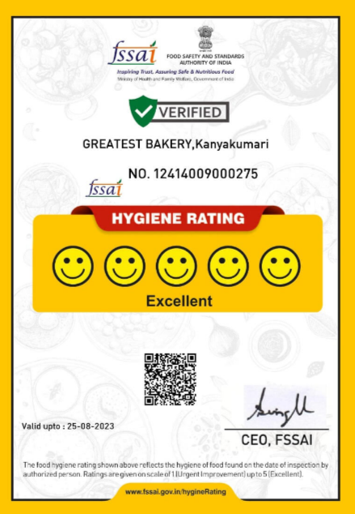

ABOUT US
BAKEDWITHLOVE
Baked goods have been around for thousands of years. The art of baking was developed early during the Roman Empire. It was highly famous art as Roman citizens loved baked goods and demanded them frequently for important occasions such as feasts and weddings. Because of the fame of the art of baking, around 300 BC, baking was introduced as an occupation and respectable profession for Romans. Bakers began to prepare bread at home in an oven, using mills to grind grain into flour for their breads. The demand for baked goods persisted, and the first bakers' guild was established in 168 BC in Rome. The desire for baked goods promoted baking throughout Europe and expanded into eastern parts of Asia. Bakers started baking bread and other goods at home and selling them on the streets. This trend became common, and soon, baked products were sold in streets of Rome, Germany, London, and more. A system of delivering baked goods to households arose as the demand increased significantly. This prompted bakers to establish places where people could purchase baked goods.

LEAVE US A MESSAGE
A bakery is an establishment that produces and
sells flour-based foodbaked in an oven such as
bread, cookies, cakes, doughnuts, bagels,
pastries, and pies. Some retail bakeries are also
categorized as cafés, serving coffee and tea to
customers who wish to consume the baked
goods on the premises.
Court Road
Nagercoil-629001
Tamilnadu.
04652-234784/04652-278789
KP ROAD,RVPURAM
Nagercoil-629001
Tamilnadu.
04652-234784/04652-278789
mail@greatestbakery.in